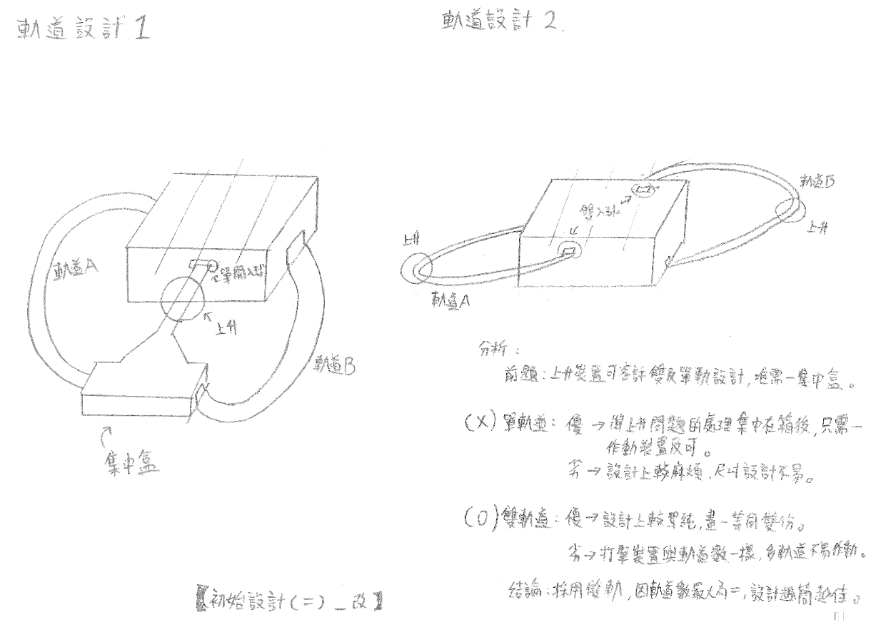
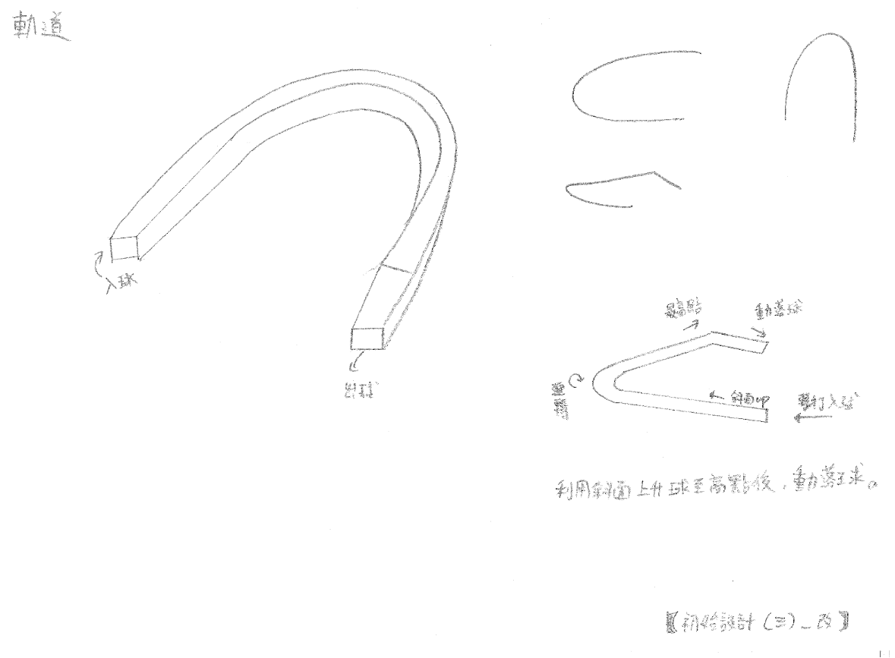
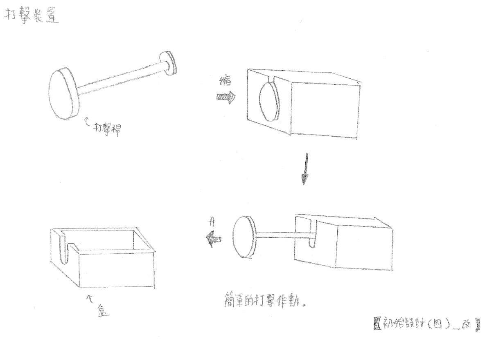
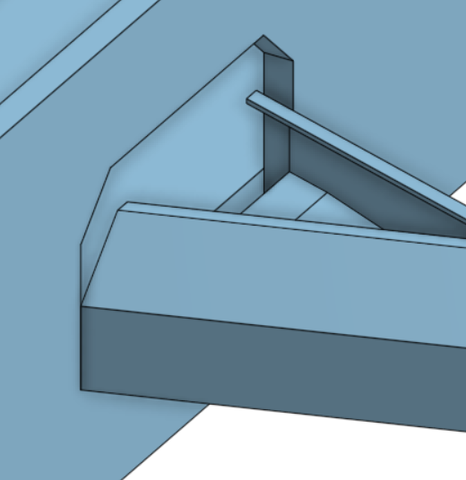
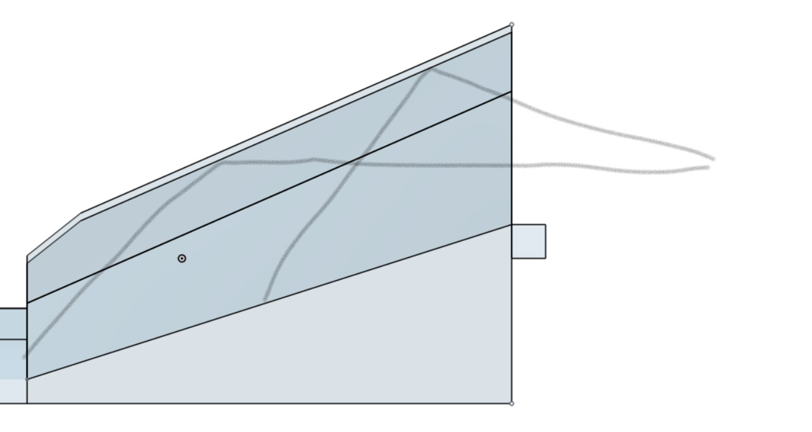
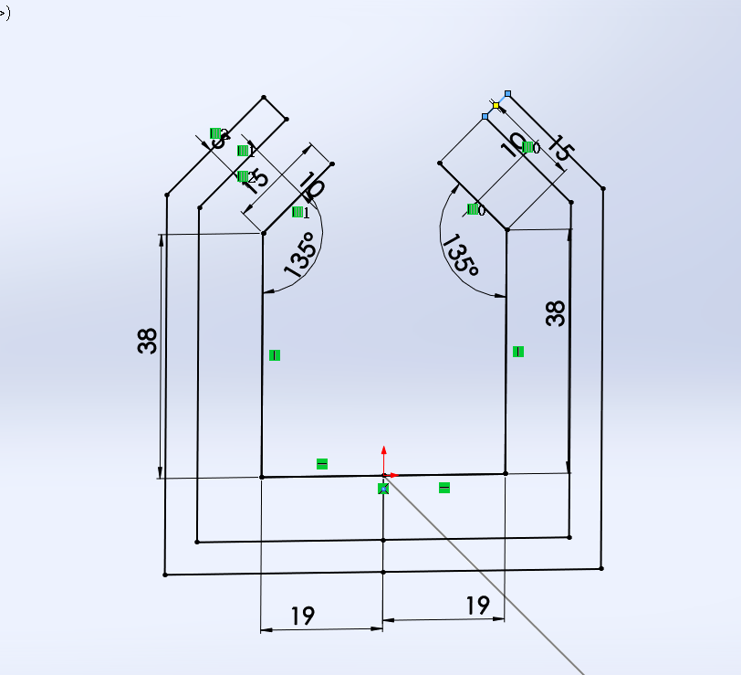
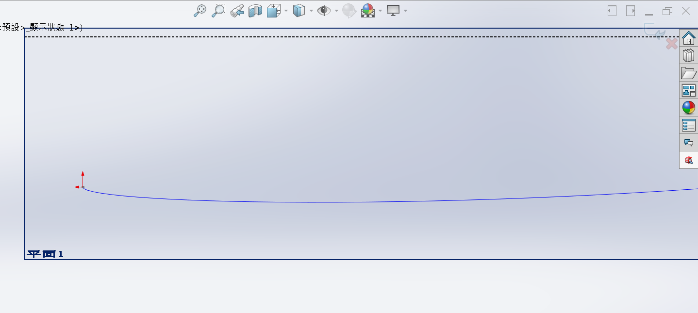
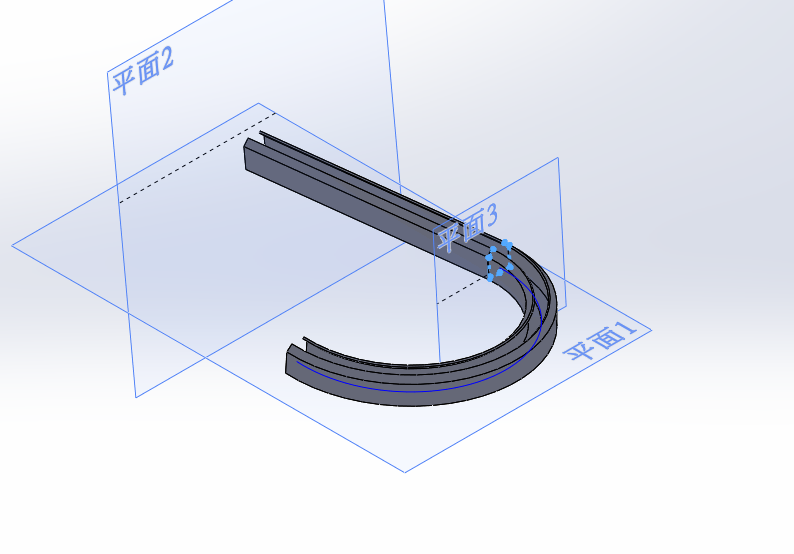
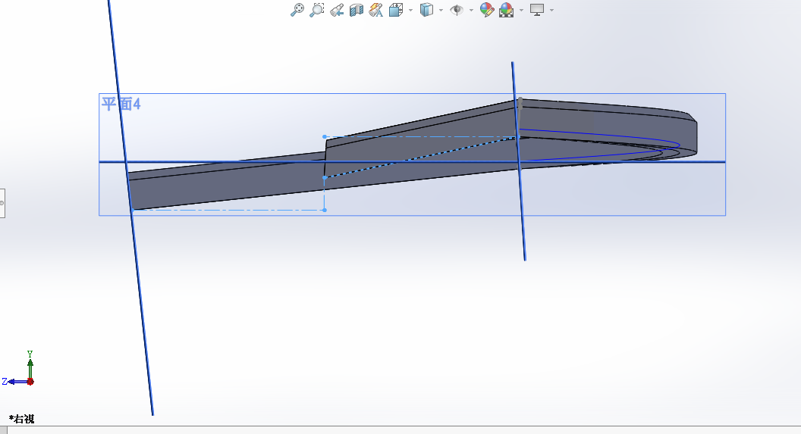

零組件尺寸分析 << Previous Next >> 細部設計與 BOM-1
零組件尺寸分析 << Previous Next >> 細部設計與 BOM-1
參數設計與繪圖
手足球系統的零組件參數設計與繪圖 (零組件初步設計繪圖)
【機構設計】
〈初始設計〉
初始設計挑出了選多方案，如:
1.桿件推送
2.螺旋尺上推
3.打擊軌道
_改.png)
最後挑選打擊裝置搭配配斜面軌道的方式將球送出。
因只需一次做動就可完成目標。
〈軌道設計〉

最初設計是想將兩條軌道集合一束，用一次打擊就可，
但後來發現會有收束誤差與繪製上的困難，後來還是改
為左右各開一條軌道，後來還是改為左右各開一條軌道
並各自擁有一打擊裝置。
最後採用複斜面旋轉軌道，將球送至最高點後，再使用斜面將球滾落。
〈打擊機構設計〉

打擊機構非常直覺，就是使用一個帶緣圓棒將球打擊出去，
並外掛置打擊區旁，作為球之動力。
〈集球門〉
原先的設計，發現組裝後門框的高度沒有高於球門，怕會出現卡球的可能所以要重新畫


第二版

在畫的時候發現球檯沒有高度，而假如球快速的撞擊檔板可能會造成球直接反彈並有可能回到場地內，就把球檯加高3英吋，在檔板的部分畫成密閉式以防球會跑出去
<<<<<<< HEAD

〈軌道〉初版
因為當時還不確定球的大小，就先設計較大的尺寸，以利後續挑整

用螺旋線做去軌道的路線

用掃掠將軌道做出

最後的下銳

不過因為螺旋半徑不夠大、下銳角太大、整體上升不足......等問題做了第二代
零組件尺寸分析 << Previous Next >> 細部設計與 BOM-1